Put your colleagues in the Sales Team and assign Minji Kim to the sales representative role in 「Sales Proposal Creation」. Check the owners in the run dialog, then run the process in the next chapter.
Teams and roles#
Hanbit Office is a B2B office furniture company. You are following this tutorial as Jinyoung Jang, the sales team lead and admin. Minji Kim is the sales representative. Seoyeon Park is the finance officer.
In Chapter 4, you renamed the first step to 「Enter Customer Request」 and saved the definition. Now you will add your colleagues to the org chart and assign a role owner.
A team groups people in the organization. A role is the work someone owns in a process. Each lane represents a role. Adding Minji to the Sales Team and assigning Minji to the 「Sales Representative」 role are two separate actions.
Try it 1 — Prepare your colleagues' accounts#
The team member list shows accounts that have already signed up. Minji and Seoyeon must register on the same installation first.
- Keep Jinyoung's browser open. Open
http://localhost:8088in another browser or a private window. - Go to the account registration screen you used in Chapter 1.
- Register Minji with the name
Minji Kim, emailminji@hanbit.example, and a password that meets the rules shown on screen. - Register Seoyeon in the same way, using
Seoyeon Parkandseoyeon@hanbit.example. - Check that each registration succeeds and that the account can open the Process Definition Map. If the accounts already exist, sign in with them instead.
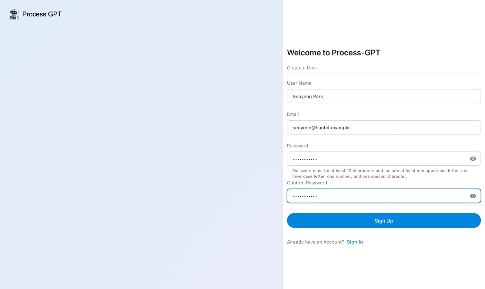
Using another browser keeps Jinyoung signed in to the original window. Return to Jinyoung's window for the org chart exercise.
Open settings and look at 「Manage Users」. You should see Jinyoung Jang, Minji Kim, and Seoyeon Park.
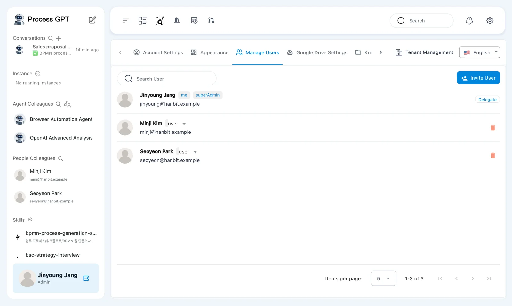
Inviting users on a local installation
「Invite User」 in 「Manage Users」 sends an email invitation. For this local exercise, have your colleagues register directly. User management and invitations are covered again in Chapter 18.
Try it 2 — Create the Sales Team#
- In Jinyoung's window, click the people icon beside 「Agent Colleagues」 in the sidebar.
- Open 「Organization Chart Management」 on the left. The tab name may be shortened to 「Organization Chart Managem…」. Find 「Select Team」 and the 「Delete Team」, 「Edit Team」, and 「Add Team」 buttons.
- Click 「Add Team」. In the dialog, enter
Sales Teamin 「Team Name」 and click 「Add」. - Check that a 「Sales Team」 card appears below 「localhost」 and that 「Select Team」 shows the new team.
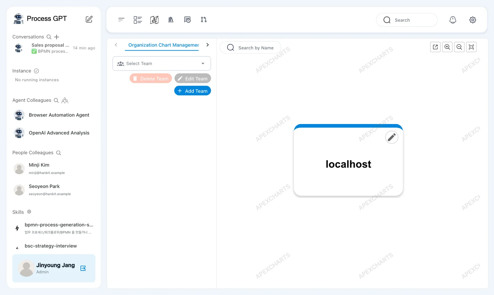
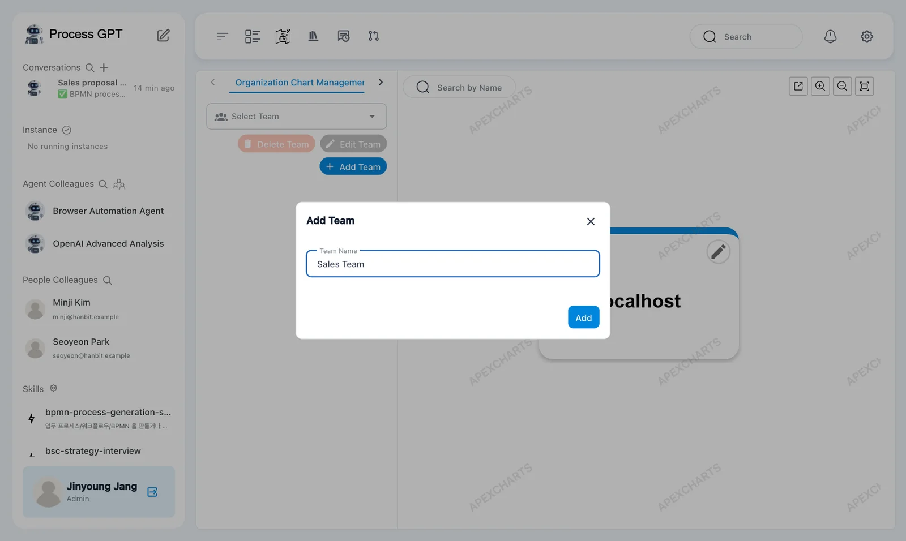
The top 「localhost」 card is the organization name. Its pencil icon lets an admin rename it. Leave it as it is for this tutorial. You will use the other tab, 「Create Agent」, in Chapter 9.
Try it 3 — Add and check team members#
- Check that 「Select Team」 shows 「Sales Team」, then open 「Select Team Member」.
- Check the names and emails. Select Jinyoung Jang, Minji Kim, and Seoyeon Park. Each selected person appears as a chip.
- Click 「Save」. Check that three person cards appear below 「Sales Team」.
- Open settings and 「Manage Users」. Check that each person's row shows 「Affiliated Team : Sales Team」.
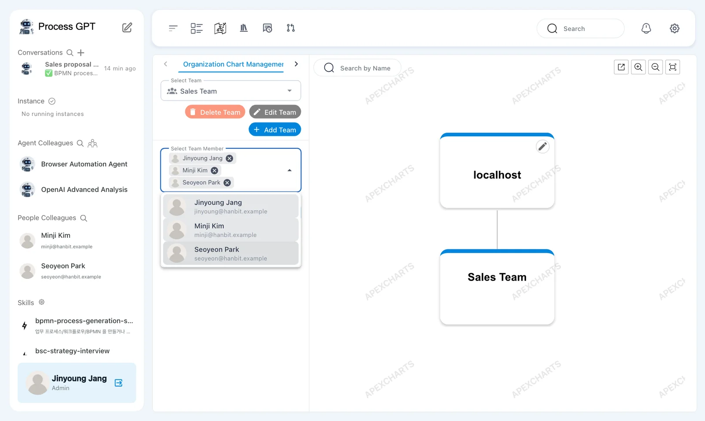
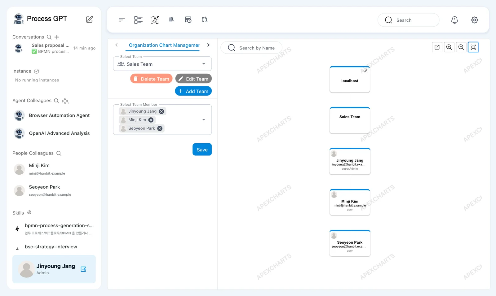
In 「Manage Users」, Jinyoung has the labels 「me」 and 「superAdmin」. Minji and Seoyeon have 「user」.
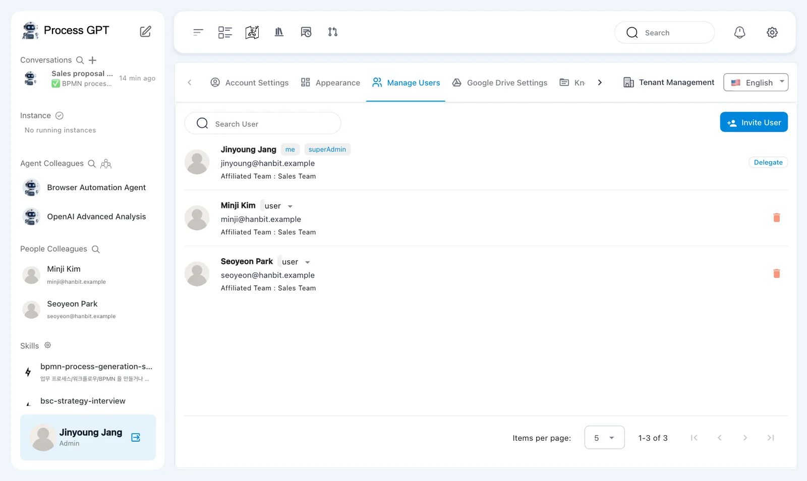
Account permissions and process roles are different
「superAdmin」 and 「user」 describe account permissions. They do not mean 「Customer」 or 「Sales Representative」. You assign those process roles in the definition's lanes.
Try it 4 — Assign Minji as the sales representative#
Team membership does not by itself assign Minji to a process step. Set Minji as the owner in the definition's lane.
- On the Process Definition Map, open 「Sales Proposal Creation」. The sub-process screen has 「Simulation」, 「Edit」, and 「Execute」 above the flow diagram.
- Click 「Edit」, then double-click the 「Sales Representative」 lane name.
- In the panel on the right, check that 「Name」 is 「Sales Representative」. Find 「Select Role Type」 under 「Role:」.
- Choose 「Role Resolution By Direct user」. In 「User ID」, type
Minji. - Select 「Minji Kim minji@hanbit.example」. Check that Minji appears as a chip.
- Click the panel's save icon, then close the panel with X.
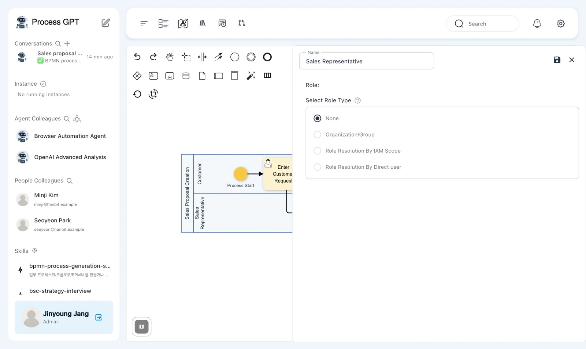
「Select Role Type」 offers 「None」, 「Organization/Group」, 「Role Resolution By IAM Scope」, and 「Role Resolution By Direct user」. This exercise uses direct user assignment so that Minji owns the role.
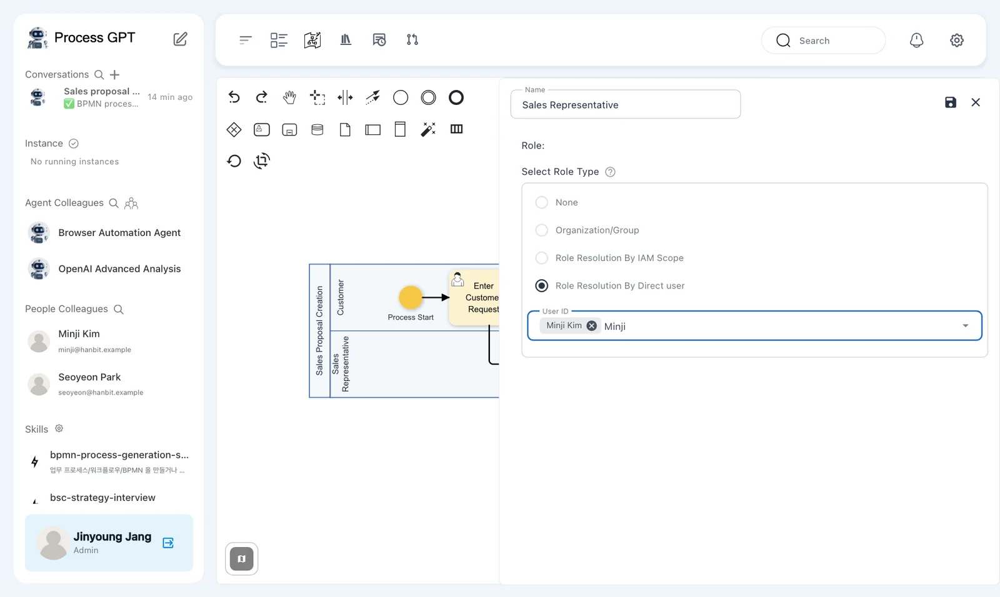
A breadcrumb still shown in Korean
The current version shows 「미분류 › 미분류」 in the definition breadcrumb, even in English mode. It means the definition is under uncategorized levels.
Try it 5 — Save a version#
- Click the save icon at the top right of the definition screen. The 「Version Up」 dialog opens.
- Leave 「Version Tag」 at 「Minor Update (Increment decimal version (e.g., 1.3 → 1.4))」.
- In 「Description」, enter
Assigned the sales representative role to Minji Kim. - Leave 「Create a merge request」 and 「Use Process Definition Optimization」 unchanged, then click 「Save」.
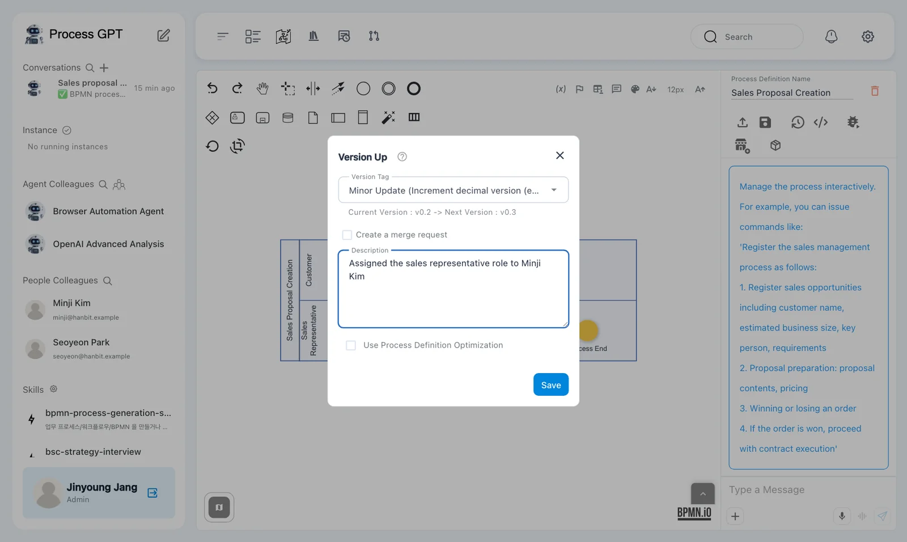
Our dialog shows 「Current Version : v0.2 -> Next Version : v0.3」. Your numbers may differ if you saved more versions in Chapter 4.
Saving the lane panel applies the change to the diagram. Saving the definition keeps it as a version. Do both.
Try it 6 — Check the owners before running#
- On the 「Sales Proposal Creation」 sub-process screen, click 「Execute」.
- Look at 「Role Mapping」 on the left. Check that 「Customer」 is Jinyoung Jang and 「Sales Representative」 is Minji Kim.
- Close the dialog with X without clicking 「Submit Complete」.
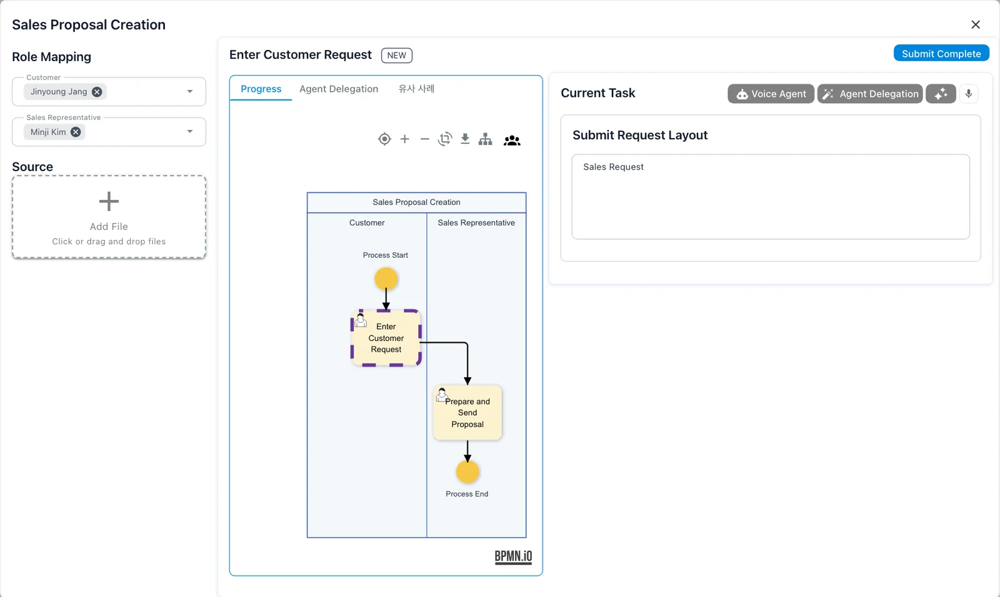
Jinyoung takes the 「Customer」 role for this exercise. The first step is 「Enter Customer Request」. On the right, 「Current Task」 contains 「Submit Request Layout」 and its 「Sales Request」 field.
The dialog also shows 「Progress」, 「Agent Delegation」, and 「유사 사례」 tabs. You will enter the request in the next chapter.
A tab still shown in Korean
The current version displays the similar-cases tab as 「유사 사례」, even in English mode.
Opening the dialog already creates a to-do
In the current version, opening the run dialog creates the first-step to-do. Closing it without submitting can leave an 「Enter Customer Request」 card in the task list. In Chapter 6, choose the task by its instance name so you work on the new request.
Next chapter#
You created the Sales Team and assigned Minji to 「Sales Representative」. In Chapter 6, Jinyoung submits a customer request and Minji finishes the task Minji receives.
Check your understanding
- What must Minji do before Minji appears in 「Select Team Member」?
- Does 「user」 on a person card mean that person is the sales representative?
- Where do you assign Minji so the definition remembers Minji as the sales representative?
Answers
- Minji must register on the same installation. The member list shows existing accounts.
- No. 「user」 is an account permission. Process roles belong to the definition's lanes.
- Open the 「Sales Representative」 lane panel and choose Minji with 「Role Resolution By Direct user」. Save the panel, then save the definition as a version.